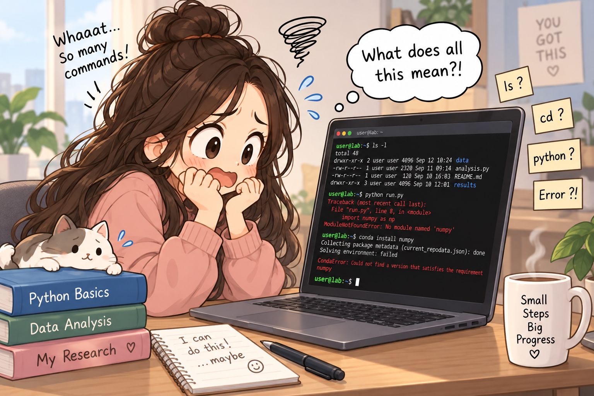
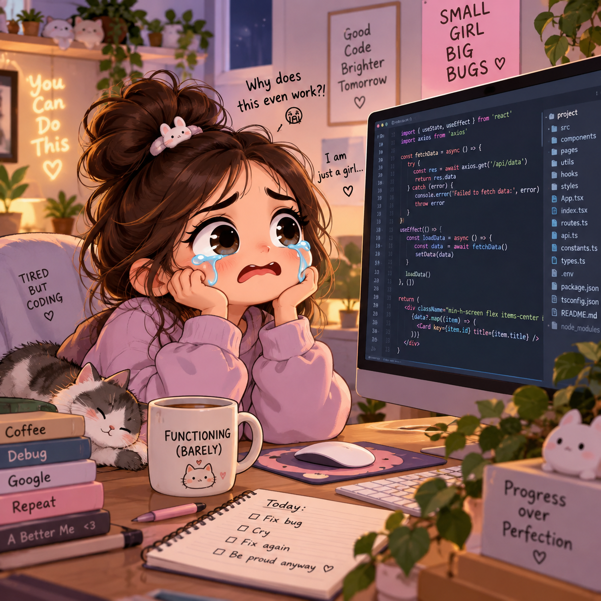
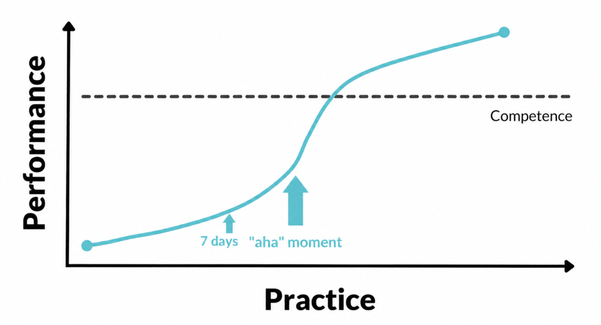
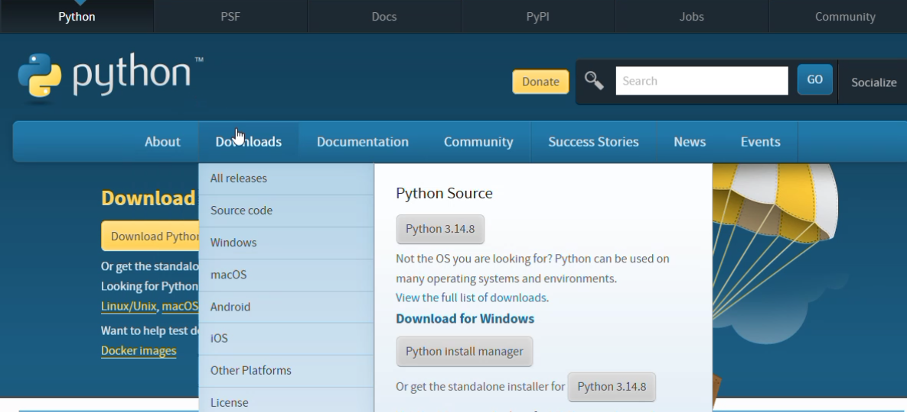
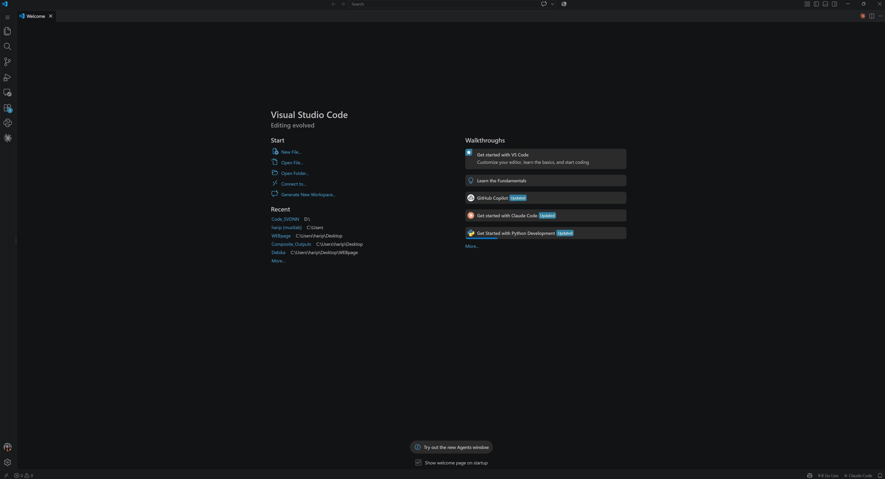
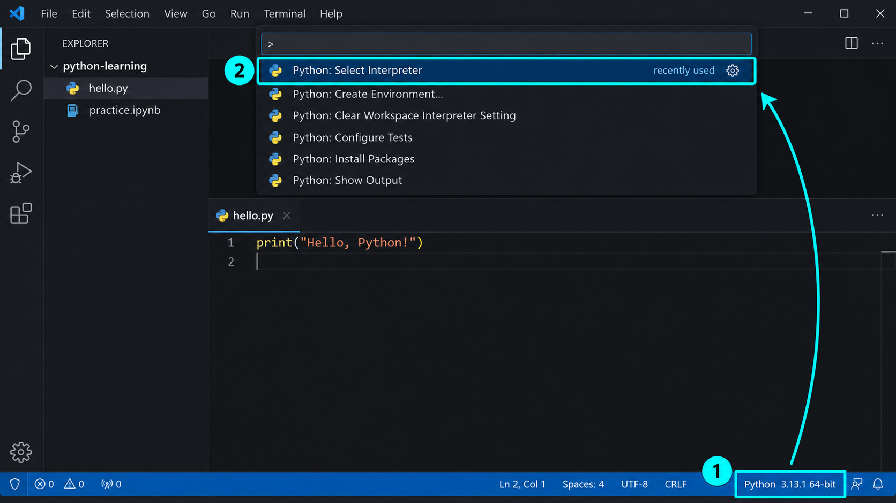

A computer/ laptop
This tutorial is for students, researchers, and curious learners who want to use Python but feel nervous whenever they see code, a terminal window (Black window with lots of text), or a colorful error message pops up on the screen of a friends computer.


When I was in Class 11, I took a coding course for the first time.
I was very excited to learn programming, but the curriculum was
extremely descriptive in the beginning. I became
scared. One fine day, I cried in front of my computer, thinking,
“I cannot do this. Coding is not my cup of tea.”
However, I did not give up. I continued learning C programming by following the
curriculum one concept at a time. By the end of the course, I had
developed a better understanding of programming and achieved a good
score and till date I am learning new concepts.
In this tutorial, we will learn Python in a fun way. Now a days we It is a difficult task for all of us to sit and read. The tutorial will be friendly for vivid readers as well as those who don't like reading long paragraph. Long paragraphs will be sqeezed in toggle menu. You can check then if you feels like. If you want you can skip the 1st 10 lessions. Go to to coding directly. If you can't understand any term you can come back to respective section to check what it is. Also there is no shortcut for leaning. After every step you need to practie. Once you practice you will get to know the error you are getting. Just reading will not help you. Also please give one hour for a day. !5 minutes for reading one sectionand 45 minutes for coding. There will be lots of question for practice. Just try to solve them.
The learning process never truly ends. After approximately seven days of regular practice, you can begin writing small Python programs. From there, you will continue learning throughout your life as you encounter new problems, tools, and ideas.
The best way to become a better programmer is to use programming in your daily work. Automate a repetitive task, analyse a small dataset, perform a calculation, or create a simple figure. Every practical problem you solve will improve your programming ability.

It is almost impossible to learn every part of Python and you do not need to. Learn the fundamentals first, and then learn additional tools when your work requires them and focus on the area connected to your work or interests.
There will be lots of commands(syntax), Don't by heart them in the 1st instance. You will find most of the command related to the real world activities. Just try to relate them. If something is new and you can't remember them then come again when you need them. At the end you are the smartest one, not machine.
A carefully ordered course that begins with what programming means, explains language types and development tools, and gradually reaches practical scientific computing, data analysis, and machine learning.
The complete learning path is ready, but the lessons are intentionally empty. We will write and add one detailed lesson at a time so that the course stays easy to follow and easy to edit.
Understand programming, language types, Python, installation, interpreters, terminals, IDEs, and source files.
Use variables, numbers, strings, Boolean logic, input, output, and Python's essential collections.
Make decisions, repeat tasks, design reusable functions, understand scope, and build small programs.
Work with packages, environments, files, exceptions, debugging, tests, clean code, and Git.
Learn classes, inheritance, dataclasses, comprehensions, generators, decorators, and context managers.
Use NumPy, Pandas, Matplotlib, SciPy, scientific file formats, automation, and machine learning.
Tick a lesson after you have studied it and completed its practice.
Your completion marks are saved automatically in this browser, so every student can maintain an individual learning record.
What comes to your mind when you hear the word Python? A big snake? Of course, a python is a large snake. But in the world of computers, Python is a fomous programming language. Python is a programming language created to make programs easier to read, write, and understand. Its design gives importance to clarity and simplicity.
Interestingly,the programming language was not actually named after the snake. Its creator, Guido van Rossum, named it after the British comedy programme Monty Python’s Flying Circus. He wanted a name that was short, memorable, and slightly playful.
Python was created by the Dutch programmer Guido van Rossum. He began developing it during the late 1980s while working at the Centre for Mathematics and Computer Science in the Netherlands. The first public version of Python was released in 1991. Guido wanted to create a programming language that was powerful but still easy to read. He believed that computer instructions should not look unnecessarily complicated. This focus on readability later became one of Python’s greatest strengths.
Stop for a moment and ask yourself this question honestly.
You might laugh after seeing this figure but you might be thinking why in your mind. Is it because my friend circle learn it? or is it because it will make my work simpler? So here is a disclaimer that learning python helps you simplify your work to some extentent. But it can't completely resolve all your problems. It can change the approches with may take comparatively small time.
Today, it is the world of following majorities. Although the concept is following majorities is sometimes good as well as bad, Let's inspect how many people uses python? and which language is more popular among coding world? If there is something better you may change you mind and you should stop here.

Python is used by a very large global community of students, professional developers, researchers, teachers, engineers, and data scientists.
According to the 2025 Stack Overflow Developer Survey , 57.9% of respondents reported using Python. Python's adoption increased by approximately seven percentage points compared with the previous year's survey.
GitHub's 2025 Octoverse report placed Python second by contributor count. It reported approximately 2.6 million Python contributors and strong growth in projects connected with AI and data science.
Do you know? When people google or ask, an AI assistant to solve a mathematical, scientific, data-processing, or beginner programming problem without naming a language, the answer is often written in Python.
Before continuing,
We have talked enough about Python. Now it is time to prepare your computer for it. Do not worry—you do not need to understand every button that appears on the screen.
Select your operating system below. The guide will stay with you one step at a time.
Follow one step at a time. Click the picture to enlarge it.

Add the image using the filename given for this step.
Visit the official Python download page. The website will recognize that you are using Windows.
Pause the video whenever you need time to complete a step.
Open Command Prompt and enter:
If you see something similar to Python 3.x.x, congratulations! Python is successfully installed.
First, we will choose a comfortable place to write Python. That place is called an IDE or code editor, and we will discuss it in the next lesson.
python3 to clearly indicate that we want to use
Python 3.
py --version. macOS and Linux users should
try python3 --version.
In the previous lesson, we installed Python. You may now be wondering: Why does my computer show a number such as Python 3.14.8? What is CPython? Why do people talk about NumPy, pandas, PyTorch, or Django?
These names belong to three different ideas: versions, implementations, and libraries. They sound technical, but the difference is simple.
A version tells us which edition or release of Python we are using—for example, Python 3.14.8.
An implementation is the actual software engine that reads and runs Python instructions.
A library is a collection of ready-made tools that helps us perform useful tasks without building everything ourselves.
The version is the model year. The implementation is the engine under the hood. The libraries are additional tools and features such as navigation, sensors, or a music system.
They belong to the same car, but they do different jobs.
Python continues to improve. Developers fix problems, improve performance, add features, and strengthen security. Each officially released form of Python receives a version number.
A Python version usually contains three numbers:
Change the numbers below and observe how a Python version is divided.
Major version · Minor version · Patch release
A major generation of the Python language. For beginners today, this will normally be Python 3.
A feature release within the same major Python generation.
Primarily contains bug corrections and security fixes.
The version displayed above is only an example for learning how Python version numbers work. The newest release changes as Python continues to develop. Always check the official Python website before installing Python.

For a beginner, a current stable Python 3 release is normally a good choice. In research or professional projects, You may need to downgrade python version. Some python packages may not developed or supported in with other library in a latest version. In that case you need to download the lower version which supports all your required libraries.
Python is a language with rules. Those rules describe how Python code should behave. But we still need a real program that reads those instructions and makes the computer perform them.
That program is called a Python implementation. Different implementations can follow the Python language while being designed for different computers or purposes.
Select an implementation to understand where it is commonly used.
CPython is the standard and most widely used implementation of Python. It is the implementation you normally receive from Python.org.
Best for: beginners, general programming, research, data science, automation, and web development.
Use CPython. Unless you have a special reason to choose another implementation, you do not need to make any decision. The Python downloaded from Python.org is normally CPython.
Imagine that you want to draw a graph. You could spend months writing everything required to create axes, colors, labels, lines, and image files or you could use a library whose developers have already built those tools.
A Python library is reusable code written to solve common problems. Libraries are one of the biggest reasons Python is so useful in science, research, artificial intelligence, automation, and web development. Some are alredy available in your current version. You need to install other libraries according to your need.
These tools are included when Python is installed. You do not normally need to download them separately.
Examples:
math
datetime
pathlib
json
csv
These libraries are created outside Python's standard library. We install them when a project requires them.
Examples:
NumPy
pandas
Matplotlib
PyTorch
Select the type of work that interests you. You do not need to learn all these libraries.
People sometimes use these words loosely. You do not need to memorize them today, but knowing the basic difference will prevent confusion.
| Term | Simple meaning | Think of it as |
|---|---|---|
| Module | A single Python file containing reusable code | One chapter |
| Package | A collection of related Python modules | A book containing chapters |
| Library | A collection of reusable tools for a purpose | A bookshelf |
| Framework | A larger structure that guides how an application is built | The plan of a building |
A researcher studying ocean data may use NumPy, xarray, netCDF4, and Cartopy. A web developer may use Django or FastAPI. A machine learning researcher may use PyTorch. All of them know Python, but their toolboxes are different.
Imagine that you have learned a new language and bought a pen but you still need a comfortable place to write. Python is the language, and the Python interpreter is what understands it. An editor or IDE is the workspace in which we write, organize, run, and correct our instructions.
There is no single “best” Python workspace for everyone. A beginner, a web developer, and a researcher may prefer different tools.
A flexible program for writing code. Additional features can be added using extensions. VS Code belongs mainly to this category.
An Integrated Development Environment combines an editor, project tools, code assistance, running, and debugging in one application. PyCharm is a full IDE.
A notebook divides work into cells and displays code, text, equations, figures, and results together. Jupyter uses this approach.
Python 3.x.x
Type "help" for more information.
>>>
IDLE is Python's simple Integrated Development and Learning Environment. It is usually included with the official Python installation.
We will mainly use VS Code because it is flexible,
works on Windows, macOS, and Linux, supports both
.py and .ipynb files, and can grow with
you from beginner projects to research work.
However, you are not forced to use it. The Python language remains the same in IDLE, VS Code, PyCharm, and Jupyter.
| Tool | Type | Main file | Best suited for | Setup | Computer resources |
|---|---|---|---|---|---|
| IDLE | Learning environment | .py |
First steps and small programs | Usually included | Low |
| VS Code | Extensible code editor |
.py,
.ipynb
|
General programming and research | Extension required | Moderate |
| PyCharm | Full Python IDE |
.py,
.ipynb
|
Large and structured projects | Separate installation | Moderate to high |
| JupyterLab | Notebook environment | .ipynb |
Data, figures, experiments, and research | Package installation | Moderate |
What do you mainly want to do with Python?
If IDLE is available, no separate download is necessary.
Current PyCharm installations include a Pro trial, after which the core features can continue to be used for free.
Windows:
macOS or Linux:
After installation, start it using:
JupyterLab will normally open inside your web browser.
An IDE is the workspace. The Python interpreter is the engine that runs the instructions. VS Code, PyCharm, and Jupyter must connect to an installed Python interpreter.
This is why VS Code sometimes displays Select Interpreter. It is asking: “Which installed Python should I use?”
.ipynb notebook files.
You may have noticed that some Python files end with
.py, while others end with .ipynb.
Both can contain Python code, but they store and present that
code in very different ways.
Think about a recipe. You could write the complete recipe on one continuous sheet of paper, or place each step on a separate card with photographs and notes.
A .py file is like the continuous sheet. It is the standard extension for Python source code.
The .ipynb is Interactive Python Notebook (Originally stands for IPython Notebook). It is like the collection of cards called cells. It is a file format used by Jupyter Notebook and other interactive computing environments to store and share code, text, and visualizations.
.py file
A .py file is a plain-text file
containing Python instructions. It is commonly
called a Python script or Python module.
.ipynb file
An .ipynb file is an interactive
notebook containing cells. A cell can contain
code, formatted text, equations, images, or output.
Select a file type to see how the same small analysis might appear inside it.
.py file run?
When Python is asked to run a .py file, the
interpreter reads and executes the instructions in the file.
Usually, it begins at the top and moves downward.
analysis.py can be run
from a terminal using:
python analysis.py
IDEs such as IDLE, VS Code, and PyCharm can run the same file using a Run button. The button eventually asks a Python interpreter to execute the file.
.ipynb notebook run?
A notebook is divided into cells. Each code cell can be run separately using the run button. Run button attaches to the cell and executes its content. The result normally appears directly below the cell.
Contains Python instructions that can be sent to a Python kernel for execution.
Contains headings, explanations, lists, links, images, or mathematical equations.
.py file
A .py file stores ordinary text. If
you open it with a text editor, you see the Python
instructions directly.
temperature = 27.5
location = "Kaohsiung"
.ipynb file
An .ipynb file is a plain-text document structured in JSON format that stores the complete contents, history, and outputs of an interactive computing session.
{
"cells": [],
"metadata": {},
"nbformat": 4
}
.ipynb file. Open it using JupyterLab,
Jupyter Notebook, VS Code, or another notebook-compatible
application.
.py and .ipynb
Neither format is always better. Each one is designed for a different style of work.
| Feature | .py |
.ipynb |
|---|---|---|
| Basic structure | Continuous text file | Collection of interactive cells |
| Execution | Normally runs from top to bottom | Cells can be run separately |
| Explanations | Usually written as comments | Markdown cells support rich explanations |
| Saved output | Normally not stored inside the file | Can store output and figures |
| Best for | Scripts, programs, modules, and automation | Research, teaching, and exploration |
| Version control | Simple to compare line by line | More difficult because it contains JSON and output |
| Typical applications | IDLE, VS Code, PyCharm | JupyterLab, Jupyter Notebook, VS Code |
Enter a filename and let us identify its file type.
Select the type of work you want to do.
Researchers and data scientists frequently begin with a notebook and later move reusable parts into Python files.
.ipynb notebook.
.py files.
No. Changing analysis.py to
analysis.ipynb does not convert the file into a
notebook. The two formats have different internal structures.
.ipynb file contain Python only?
No. A notebook can contain Python code, Markdown text, equations, images, metadata, and stored output. Jupyter also supports kernels for some other programming languages.
Yes. VS Code can open .py files using its
Python support. It can also open .ipynb
notebooks when the required Python and Jupyter extensions
are installed.
Not always. A notebook is excellent for exploration and explanation. A Python file is generally better for reusable scripts, modules, applications, and automated workflows.
Notebook output can be stored inside the
.ipynb file. That output may include text,
tables, images, and visualizations.
Yes. A project can use notebooks for exploration and presentation while keeping reusable calculations and functions inside Python files.
The terminal may look like a frightening black window filled with unfamiliar text. But it is simply another way to talk to your computer that is one short command at a time.
When we use buttons and menus, we communicate with the computer through a graphical interface. In a terminal, we communicate by typing short text instructions.
The terminal is not only for expert programmers. We will use it for simple tasks such as checking Python, moving between folders, installing libraries, and running files.
People often use the words interchangeably, but they describe different parts of the command-line experience.
The terminal is the visible application or window. It displays text, accepts keyboard input, and shows the result of a command.
The shell works inside the terminal. It reads your command, interprets it, and asks the operating system or another program to perform the task.
The tools available to you depend mainly on your operating system.
Command Prompt uses the traditional Windows command
interpreter called cmd.exe. It supports
commands such as dir, cd,
and cls.
PowerShell is a newer command-line shell and scripting
environment. It provides commands called cmdlets,
such as Get-Location and
Get-ChildItem.
Bash and Zsh are common Unix-style shells. Bash is widely used on Linux, while modern macOS systems use Zsh as the default login shell.
Linux and macOSThe prompt is the text shown before the place where you type. It often displays your username, computer name, or current folder.
C:\Users\Learner>
PS C:\Users\Learner>
learner@computer:~$
$ python3 --version,
type only python3 --version. The
$ represents the prompt.
Select a shell and try the suggested commands. This is only a webpage simulation—it will not change anything on your computer.
A command can contain a program name, an option, and an argument. Not every command requires all three.
python
Program
-m
Option
pip
Argument
--version
Additional argument
python -m pip --version. It asks your
selected Python interpreter to open the pip
module and display its version.
Different shells sometimes use different commands for the same task.
| Task | Command Prompt | PowerShell | Bash / Zsh |
|---|---|---|---|
| Show current folder | cd |
Get-Location |
pwd |
| List files and folders | dir |
Get-ChildItem |
ls |
| Enter a folder | cd folder |
cd folder |
cd folder |
| Move to parent folder | cd .. |
cd .. |
cd .. |
| Create a folder | mkdir folder |
mkdir folder |
mkdir folder |
| Clear the screen | cls |
Clear-Host |
clear |
| Check Python | py --version |
python --version |
python3 --version |
| Leave the shell | exit |
exit |
exit |
A path describes the location of a file or folder on your computer.
C:\Users\Haripriya\python-learning
Windows paths normally use backslashes
(\).
/home/haripriya/python-learning
Unix-style paths use forward slashes
(/).
cd "Python Projects".
A terminal is powerful because commands can make changes quickly. That power should be used carefully.
Complete these steps using the terminal on your computer. They do not delete or overwrite any files.
cd, Get-Location, or
pwd.
dir, Get-ChildItem, or
ls.
mkdir python-learning.
cd python-learning.
py --version,
python --version, or
python3 --version.
No. The terminal provides a place to enter commands. Python is a separate program that can be started from the terminal.
No. Both are available on Windows, but they are different shells. PowerShell provides its own cmdlets and more advanced scripting capabilities.
The command depends on the operating system and how
Python was installed. Windows often supports
py or python, while Linux and
macOS commonly use python3.
Yes. VS Code has an integrated terminal. Depending on your system and settings, it may open PowerShell, Command Prompt, Bash, Zsh, or another installed shell.
No. Closing a normal terminal window ends that terminal session, but files already saved on your computer remain there.
No. Begin with a few commands such as cd,
ls or dir,
mkdir, and the Python version command.
Repeated use will gradually make them familiar.
Python is installed, your editor is ready, and you understand the terminal. Now it is time to create a real Python file, write your first instructions, and ask Python to run them.
Writing code is only one part of programming. We also need to save the code inside a file, choose the correct Python interpreter, run the file, and examine the output.
We will demonstrate this workflow using VS Code. The same basic process also applies to IDLE, PyCharm, and other Python editors.
Three separate components work together when you run Python code in VS Code.
Follow each step carefully. Small details such as the folder, filename, and selected interpreter are important.
Create a folder named
python-learning. This folder will
contain the files created during this course.
You can create it using your file manager or the terminal:
Open VS Code and select:
Opening a folder creates a workspace. New files will appear inside the Explorer panel.
Select the New File button in the Explorer panel and name the file:
The .py extension tells VS Code that
this is a Python source file.
Open the Command Palette using
Ctrl + Shift + P. On macOS, use
Command + Shift + P.
Search for:
Select the Python installation you installed earlier.
Type the following line inside
first_program.py:
The print() instruction asks Python
to display something on the screen.
Press Ctrl + S on Windows or Linux.
On macOS, press Command + S.
A small dot beside the filename usually indicates that the file contains unsaved changes.
Select the triangular Run Python File button near the upper-right corner of the editor.
VS Code opens its integrated terminal and asks the selected Python interpreter to run the file.
In languages such as C or C++, programmers normally perform a separate compilation step that creates an executable file. Python usually hides this step from the beginner.
.py file.
These methods run the same file using the selected Python interpreter.
Select the triangular Run Python File button in the upper-right corner of VS Code.
Run Python File
Right-click inside the editor and select the Python run option.
Run Python File in Terminal
Open the terminal in the folder containing your Python file and enter a command.
python first_program.py
py first_program.py. On Linux or macOS, you
may need python3 first_program.py.
Edit the message and press Run. This is a safe browser simulation of a small part of Python—it does not execute code on your computer.
print(). Use VS Code,
IDLE, PyCharm, or Jupyter to run complete Python code.
A clear filename makes your project easier to understand and avoids several common problems.
first_program.pytemperature_analysis.pystudent_results.pyplot_velocity.pymy program.py — contains a space1program.py — begins with a numberpython.py — may cause confusionnumpy.py — may hide the real library.py extension for a Python
source file.
| Action | Windows/Linux | macOS |
|---|---|---|
| Save file | Ctrl + S |
Command + S |
| Command Palette | Ctrl + Shift + P |
Command + Shift + P |
| Open terminal | Ctrl + ` |
Control + ` |
| Find text | Ctrl + F |
Command + F |
| Comment or uncomment | Ctrl + / |
Command + / |
Confirm that the file ends with .py and that
the Microsoft Python extension is installed and enabled
in VS Code.
Open the Command Palette, select Python: Select Interpreter, and choose your installed Python version. If Python was installed while VS Code was open, restart VS Code.
The terminal may be in a different folder. Use
dir or ls to check whether the
Python file is present in the current folder.
Save the file before running it. Press
Ctrl + S or Command + S, then
run the file again.
Read the final line of the error first. Check the filename, quotation marks, parentheses, spelling, and indentation. Errors are part of programming and usually tell us where to begin investigating.
Make sure you selected Run Python File in Terminal. Some extensions may send output to an Output panel or Debug Console instead.
Complete these steps using your actual code editor.
python-learning folder in VS Code.
about_me.py.
print() to display your name.
print() instruction describing
why you want to learn Python.
.py.
No. In normal Python development, you run the source file directly. Python automatically performs the necessary internal bytecode compilation.
VS Code is the editor where you write and organize code. Python is the interpreter that executes the instructions.
.py?
The extension identifies it as a Python source file. It helps the editor provide Python syntax coloring, suggestions, formatting, and appropriate run options.
Yes. A saved Python file can be run from Command Prompt, PowerShell, Terminal, IDLE, PyCharm, or another Python-compatible environment.
.pyc file?
It is a cached bytecode file that Python may create automatically. Beginners normally do not need to open, edit, or create it manually.
VS Code may initially look like an aeroplane cockpit: buttons, panels, icons, and menus everywhere. You do not need to learn everything at once. Let us understand only the tools needed for writing Python.
Visual Studio Code is a flexible code editor. You can use it to write C++ code, Python code, or other programming languages like html, CSS, java script. In this tutorial we will focus on using VS Code for Python development. By itself, it is not Python and does not include a Python interpreter.
We need to add the Python extension for VS Code to provide full Python development support. After adding the Python extension, VS Code can help us write, run, organize, inspect, and debug Python programs. The same editor can later support Jupyter notebooks, Git, remote servers, and many other programming languages.
The below figure is a typical VS Code interface. You can hide the components and adjust their space consumption by dragging them up down or left right. Click the different regions of the interface below to learn what they do.
VS Code is a general code editor. An extension teaches it how to provide tools for a particular language or type of work. Follow the four illustrated steps below before writing code.
.ipynb notebooks in this course.
Shortcut: press Ctrl + Shift + X on
Windows/Linux or
Command + Shift + X on macOS.
ms-python.python.
Searching by the exact ID helps you avoid choosing a different extension with a similar name.
VS Code may also add supporting Microsoft extensions such as Pylance and Python Debugger.
Identifier: ms-python.python
ms-toolsai.jupyter.
Jupyter is needed for the notebook lessons that use
.ipynb files. It is not required merely
to run ordinary .py files.
Identifier: ms-toolsai.jupyter
Complete both checks when the installations finish.

Click Open Folder..., choose the folder
containing your project, then open a
.py or .ipynb file from the
Explorer panel.
Press Ctrl + Shift + P, search for
Create: New Jupyter Notebook, and save
the new file with an .ipynb extension.
In a notebook, click Select Kernel at the top-right, choose your Python environment, then use the button beside a cell to run it.
.ipynb notebooks;
a Python interpreter runs ordinary
.py files.
A computer may contain several Python installations. VS Code needs to know which one should run the current project.

As you type, VS Code can suggest functions, variables, methods, and installed packages. This assistance is called IntelliSense.
VS Code contains a terminal panel, so you do not need to switch to a separate Command Prompt or Terminal application.
python first_program.py
Ctrl + `. You can also use
Terminal → New Terminal.
A notebook contains Python code, notes, and output in one file. Click a toolbar control below to learn what it does.
Running tells us whether a program works. Debugging lets us pause the program and inspect what is happening internally.
F5 and select Python File.
| Action | Windows/Linux | macOS |
|---|---|---|
| Command Palette | Ctrl + Shift + P |
Command + Shift + P |
| Save file | Ctrl + S |
Command + S |
| Open terminal | Ctrl + ` |
Control + ` |
| Extensions view | Ctrl + Shift + X |
Command + Shift + X |
| Run and Debug view | Ctrl + Shift + D |
Command + Shift + D |
| Start debugging | F5 |
F5 |
| Find text | Ctrl + F |
Command + F |
| Comment a line | Ctrl + / |
Command + / |
A Jupyter notebook can contain your explanation, Python code, results, graphs, and images in one organised project file.
Click + Markdown in the notebook toolbar.
Add headings, short explanations, lists, and results.
Press Ctrl + Enter to turn Markdown into a formatted page.
images folder inside your project folder.Ctrl + Enter to render the image.
After writing your Markdown, code, figures, and results, you can
export your .ipynb notebook as an HTML page or PDF report.
Press Ctrl + S to save your notebook.
Run all cells so that figures, tables, and results appear.
Click the three dots ... in the notebook toolbar.
Select Export, then choose HTML or PDF.
Ctrl + P and choose
Save as PDF.
.ipynb notebook can become a complete project
report. A normal .py file is mainly for Python code,
so it does not export as a complete report in the same way.
No. VS Code, the Python extension, and the Python interpreter are separate components. Python must be installed and then selected inside VS Code.
No. The official Python extension can run Python files directly. Beginners can avoid Code Runner because it may use a different output panel or interpreter configuration.
It determines which Python installation and packages are used for running, debugging, autocomplete, and other Python features in the workspace.
It is a searchable list of VS Code commands. Open it using
Ctrl + Shift + P or
Command + Shift + P.
No. A breakpoint is a debugging marker that deliberately pauses the program so you can inspect its current state.
We have prepared our computer, explored the terminal, and learned how to use VS Code. Now we are finally ready to give Python an instruction and watch the computer follow it.
Python
Code → Result
You write Python instructions in a language that humans can read. However, the computer's processor does not directly understand those instructions.
The Python interpreter is the program that reads your Python code, checks it, translates it into instructions Python can execute, and produces a result.
Python can execute instructions interactively or read them from a saved Python file.
Open Command Prompt, PowerShell, Terminal, or the integrated terminal in VS Code. Then enter the command appropriate for your system.
py
The Python launcher commonly used on Windows.
python
Works when Python is available through your system path.
python3
Common command for starting Python 3 on Unix-style systems.
>>>. This is the Python prompt. It
means that Python is waiting for your instruction.
>>> symbol when
copying an example from a tutorial. It represents the
interpreter prompt, not part of the Python instruction.
Open python in interactive mode or VS code. Then type the following instructions. You should see the same output as shown below.
Save the file and select Run Python File. You should see:
Change the messages and select Run. This is a safe webpage
simulation supporting simple print()
instructions. Remember that if you are printing a message keep it inside quotation marks. We will learn more about quotation marks in the upcoming lessons.
No. VS Code is an editor. The Python interpreter is the program that actually executes Python instructions.
>>> mean?
It is Python's primary interactive prompt. It means the interpreter is waiting for the next instruction.
>>> before every command?
No. Python displays that prompt automatically in
interactive mode. It should not be copied into a
.py file.
Interactive mode executes one instruction immediately. Script mode executes instructions saved inside a Python source file.
Quotation marks tell Python that the enclosed characters are literal text rather than the name of a variable or another Python instruction.
Enter exit() and press Enter. Keyboard
shortcuts for ending the session also exist, but
exit() is clear and easy for beginners.
Before writing large programs, learn these small rules. Most beginner errors happen because of one missing letter, space, file, or symbol—not because Python is difficult.
A file path tells Python where a file is stored on your computer. Beginners often see an error simply because Python is looking in the wrong folder. You can simply copy the file by "ctrl+c" and paste into VS-code "Code editor" by "ctrl+v". It will automatically set the path for you.
data/temperature.csv
General Practice: Keep your data inside your project folder whenever possible.
Then use a simple relative path such as
data/temperature.csv.
Capital and small letters are different in Python.
print, Print, and
PRINT are not the same instruction.
print("Hello")
Print("Hello")
Write Python keywords exactly as shown in examples.
PIn Python, indentation refers to the whitespaces (spaces or tabs) added at the beginning of a line of code. You can't write one line from starting of the row and the next line with some spaces.
print("Hello")
print("It is hot")
This is wrong indentation. The second line should not have spaces before it. It should be like this:
print("Hello")
print("It is hot")
We will learn more about indentation: where to use spaces and tabs in the upcoming lessons.
The end of a filename tells VS Code what type of file it is.
Python programs should normally end with .py.
my_first_program.py
my_first_program.ipynb
my_first_program
my_first_program.txt
Jupyter Notebook projects use the extension
.ipynb.
Python notices missing quotation marks, brackets, parentheses, and colons. Check that every opening symbol has a closing partner.
Rule of thumb: If you open a symbol, you must close it. If you start a string with a quotation mark, you must end it with the same type of quotation mark. This will prevent syntax errors.print("Hello")
print("Hello)
print("Hello"
print("Hello')
When an error appears, first check quotation marks, parentheses, square brackets, and colons.
Before running your program, check the file path, capital letters, indentation, file extension, and matching symbols.
In Vs- code one you go to next line by pressing "Enter" key, it will automatically give the correct indent. If you want to remove the indent, you can use "Backspace" key.
Yes. You can use the full path of the data file in your code. For example, if your data file is in "C:\Users\YourName\Documents\data\temperature.csv", you can use that full path in your code. However, it is recommended to keep your data file in the same folder as your code file or in a subfolder to avoid confusion.
Yes. In Python, strings are case-sensitive, so "Hello" and "hello" are treated as different strings. But if you are using them in print statements, they will both be printed as they are. For example, print("Hello") will print Hello and print("hello") will print hello.
Every programmer sees errors—even people who have been programming for twenty years. An error does not mean that you have failed. It means that your program has given you a clue about what needs attention.
When a Python instruction cannot be understood or completed, Python displays an error message. The message usually tells us what kind of problem occurred and where Python noticed it.
Learning programming does not mean learning how to avoid every error. It means learning how to read, investigate, and correct errors.
Programming is usually a repeated process rather than a straight path from code to success.
Beginners often call every problem an “error,” but it helps to separate them into three broad groups.
Python cannot understand the structure of the instruction. A quote, parenthesis, colon, or another required symbol may be missing.
The instruction is structurally valid, but a problem occurs while Python is executing it, such as dividing by zero or using an undefined name.
The program runs without displaying an error, but the result is incorrect because the instructions do not represent the intended logic.
A traceback is the report Python displays when an unhandled exception stops the program.
The final line gives the error type and a short
explanation:
NameError.
Python reports the filename and line number where the problem was noticed.
Examine the displayed code and nearby lines. The real cause may appear just before the highlighted position.
Select an error type. Read the broken code and traceback before revealing the correction.
When an error appears, avoid changing many unrelated lines. Use a small, repeatable investigation process.
A logic error occurs when the program runs but produces an incorrect answer.
total = 100
students = 4
average = total * students
print(average)Output: 400
total = 100
students = 4
average = total / students
print(average)Output: 25.0
print("Hello") and confirm that it works.
print to Print and
identify the error type.
print(10 / 0) and examine the traceback.
No. Errors occur during ordinary programming work at every experience level. Your skill is demonstrated by how you investigate and learn from them.
For a beginner, the final line is often the best starting point because it gives the error type and message. Then move upward to find the filename, line number, and code.
No. Syntax errors occur when Python cannot parse the code. Other problems occur during execution and are called exceptions.
Python usually points to the place where it noticed that something was wrong. The actual cause may appear earlier, such as an unclosed quote or parenthesis on the previous line.
Python checks whether an instruction is valid, but it does not always know your intention. Valid instructions can still represent the wrong calculation or logic.
Usually, search for the error type and the most important part of the final message. Remove personal paths, usernames, passwords, tokens, and confidential project information before sharing an error online.
All programs store everything in variables. Think of a variable as a container that holds a value. Whatever you put in the variable stored in that variable.But if you put a new value in the variable, it will replace the old value. The variable name is like a label on the container. It helps you find the value again.
Suppose you have a box containing the number 21. To find it again, you attach the label age to the box.
In Python, we can write this as:
Here, age is the variable name and
21 is the value assigned to it.
A variable is a name that refers to a value in a program. We use that name whenever we want to work with the value.
Python understands the type of each value automatically. We do not have to declare whether a variable contains text, a whole number, a decimal number, or a Boolean value.
The = symbol is called the
assignment operator. It assigns the value on its
right to the variable name on its left.
score
The variable name
85
The value being assigned
= means assignment—not “is equal to”
in the mathematical sense.
For integer, float and boolean values, we can write the number or True/False after "=" sign. But in case of strings and characters, we need to use quotes. If you use a=Roy.
Then Python will think that Roy is a variable name and we need to assign the value of Roy to a. But if you use a="Roy" or a='Roy', then Python will understand that Roy is a string value.
The name “variable” tells us that its value can vary or change while the program is running.
student_name = "Ravi"
sample_temperature = 18.7
product_price = 499
is_logged_in = False
Enter a variable name and a value. This activity will show how the assignment looks in Python.
We can choose variable names, but Python requires us to follow a few rules.
age and _result are valid.
2age is not valid.
After the first character, names may contain letters, digits, and underscores.
Use student_name, not
student name or student-name.
Names such as if, for,
class, and True have special
meanings in Python.
score, Score, and
SCORE are three different names.
water_temperature is clearer than
x when storing water temperature.
| Avoid | Better name | Why? |
|---|---|---|
| n | student_name | Explains what the text represents. |
| x1 | sample_count | Describes the stored number. |
| temp | water_temperature | Removes confusion about which temperature. |
| p | product_price | Makes the program readable. |
student_name.
Sometimes we store a value that should remain unchanged. Python does not lock the value, but programmers write its name in capital letters as a warning.
These are called constants by convention. Python can still change them, but their capitalized names tell other programmers that they should not be changed.
Type a possible variable name and check whether it follows the beginner-friendly Python naming rules.
Create variables to store your name, age, subject, and whether you enjoy learning Python.
No. A variable can be assigned another value later in the program.
No. In Python, = assigns a value. Python uses
== when it needs to compare two values. We will
learn comparisons in a later lesson.
Yes, but ordinary variable names are normally written in lowercase. Names written completely in capital letters are commonly used for values that should remain constant.
Yes. Python allows the same variable name to be assigned values of different types, although repeatedly changing its meaning can make a program difficult to understand.
Yes. Short names are sometimes useful in formulas or small
examples. For most programs, descriptive names such as
total_price are easier to understand.
Python can act as a simple calculator, but its real power begins when calculations become part of a larger program. In this lesson, we will work with numbers and learn the symbols Python uses for arithmetic.
Researchers calculate averages, engineers calculate forces, businesses calculate profit, and students calculate grades. Python uses familiar mathematical ideas but represents some operations with special symbols.
For example, Python uses ** for powers and
% for the remainder after division.
Python has three main built-in numeric types: integers, floating-point numbers, and complex numbers.
int
Integer
A whole number without a decimal point. It may be positive, negative, or zero.
25
-7
0
float
Floating-point number
A number containing a decimal point or written using scientific notation.
27.5
-0.03
1.2e3
complex
Complex number
A number containing a real and an imaginary part.
Python uses j for the imaginary unit.
3 + 5j
-2j
4 - 1.5j
Python's built-in type() function tells us the
type of a value.
print(type(25))
# Output:
<class 'int'>print(type(25.0))
# Output:
<class 'float'>25 and 25.0 represent
the same mathematical quantity, Python stores them as
different numeric types.
An operator is a symbol that tells Python to perform an operation on one or more values.
8 + 3 → 11
8 - 3 → 5
8 * 3 → 24
8 / 3 → 2.666...
8 // 3 → 2
8 % 3 → 2
2 ** 3 → 8
* for multiplication—not the
handwritten symbol ×. It uses
** for exponentiation—not
^.
Suppose 17 samples must be placed equally into groups of 5. Python can answer three different questions.
17 / 5
3.4
How many groups exactly?
17 // 5
3
How many complete groups fit?
17 % 5
2
How many samples remain?
Enter two numbers and choose a Python arithmetic operator. This calculator reproduces the basic behavior of the selected operator.
When one expression contains several operators, Python follows an order of operations. Parentheses can be used to make your intended order clear.
( )
Expressions inside parentheses.
**
Exponentiation.
+x, -x
Unary positive and negative signs.
*, /, //, %
Multiplication, division, floor division, and modulo.
+, -
Addition and subtraction.
result = 2 + 3 * 4
print(result)
# Output: 14Multiplication happens before addition.
result = (2 + 3) * 4
print(result)
# Output: 20The expression inside parentheses happens first.
total = 85 + 92 + 78
average = total / 3
print(average)Output: 85.0
length = 12
width = 5
area = length * width
print(area)Output: 60
number = 17
remainder = number % 2
print(remainder)A remainder of 0 means even; 1 means odd.
side = 6
area = side ** 2
print(area)Output: 36
Computers store most floating-point values using binary approximations. As a result, some decimal calculations may display a tiny representation difference.
Division by zero is undefined. Python stops the calculation
and reports a ZeroDivisionError.
/, //, and
% all require a nonzero divisor.
/ and
//?
/ performs ordinary division and returns a
floating-point result. // performs floor
division and rounds the mathematical result downward.
7 / 2 equal to 3.5 but
7 // 2 equal to 3?
Ordinary division keeps the fractional part. Floor division returns the greatest whole-number value that is less than or equal to the exact result.
The % operator returns the remainder after
division. For example, 17 % 5 returns
2.
^ calculate a power in Python?
No. Python uses ** for exponentiation.
The ^ symbol performs a different bitwise
operation that we will not study in this lesson.
In Python 3, the / operator returns a
floating-point result even when the mathematical answer
is a whole number. For example, 8 / 4
returns 2.0.
0.1 + 0.2 not displayed as exactly
0.3?
Many decimal fractions cannot be represented exactly using finite binary floating-point values. Python stores the closest available approximation.
Until now, we have worked mainly with numbers. But programs also need to handle names, messages, file names, emails, passwords, answers from users, and much more. In Python, text is called a string.
A string is a collection of characters written inside quotation marks. Letters, spaces, symbols, and even numbers can be part of a string.
name = "Haripriya"
message = 'Welcome to Python!'
year_as_text = "2026"
print(name)
print(message)
"2026" is text because it is inside quotation marks.
But 2026 without quotation marks is a number.
Both single and double quotation marks can create strings.
course = "Python"
teacher = 'Guido van Rossum'Use the other type of quotation mark when your text already contains a quote.
sentence = "She said, 'Hello!'"
Python can count how many characters are in a string using
len().
word = "Python"
print(len(word)) # 6Spaces and punctuation marks are also counted as characters.
Use + to join strings. This is called
concatenation.
first_name = "Asha"
last_name = "Das"
full_name = first_name + " " + last_name
print(full_name)
A cleaner way is an f-string. Put the letter
f before the quotation marks and place variables inside
curly brackets.
name = "Asha"
topic = "Python"
print(f"{name} is learning {topic}.")Methods are ready-made actions that help us clean, change, and analyse text.
.upper()
"python".upper() → PYTHON
.lower()
"PYTHON".lower() → python
.strip()
" hello ".strip() → hello
.replace()
"I like C".replace("C", "Python")
.split()
"red,blue".split(",") creates a list.
.count()
"banana".count("a") → 3
Type any sentence, choose an action, and see how Python would process it.
Strings are immutable. This means you cannot directly replace one character inside an existing string.
word = "Python"
# word[0] = "J" ❌ This causes an error
new_word = "J" + word[1:]
print(new_word) # JythonInstead, create a new string and store it in a variable.
Try to clean and introduce this name:
name = " haripriya sahoo "
# 1. Remove extra spaces.
# 2. Make the name uppercase.
# 3. Print: "Welcome, HARIPRIYA SAHOO!"Every day, we make simple decisions: Is it raining? Do I have enough money? Is my assignment finished? Python also needs answers to these kinds of questions.
A Boolean is a data type that has only two possible values:
is_python_fun = True
is_exam_today = False
print(is_python_fun)
print(is_exam_today)
Always write True and False with a capital
first letter. Python treats true and false
as different, unknown names.
Comparison operators compare two values and return either
True or False.
==
Equal to
5 == 5 → True
!=
Not equal to
5 != 3 → True
>
Greater than
10 > 4 → True
<
Less than
2 < 1 → False
>=
Greater than or equal to
7 >= 7 → True
<=
Less than or equal to
4 <= 2 → False
= and ==Stores a value inside a variable.
age = 25Checks whether two values are equal.
age == 25
Read it like this: = means “becomes”, while
== means “is equal to?”
Imagine that you want to check whether a student has passed an exam.
mark = 72
print(mark >= 50) # True
print(mark < 50) # False
print(mark == 100) # FalseThese Boolean results will later help us write programs that react differently in different situations.
Logical operators help us combine more than one condition.
Python has three important logical operators:
and, or, and not.
and
Both conditions must be True.
age = 20
has_ticket = True
print(age >= 18 and has_ticket)
# Trueor
At least one condition must be True.
is_weekend = False
is_holiday = True
print(is_weekend or is_holiday)
# Truenot
Changes True to False, and vice versa.
is_raining = True
print(not is_raining)
# False| Condition A | Condition B | A and B | A or B |
|---|---|---|---|
| True | True | True | True |
| True | False | False | True |
| False | True | False | True |
| False | False | False | False |
Predict the output first. Then run the code and check your answer.
temperature = 30
is_sunny = True
print(temperature > 25)
print(temperature < 20)
print(temperature > 25 and is_sunny)
print(temperature < 20 or is_sunny)
print(not is_sunny)
In the next lesson, we will use these Boolean conditions to make
Python choose actions using if, elif,
and else.
Until now, we have written values directly in our program. But a useful program should be able to ask a user for information, process it, and show a meaningful result.
print()
We use print() when we want Python to show something on
the screen.
print("Hello, Python!")
print(25)
print("My score is", 92)Text must be inside quotation marks. Variables and numbers do not need quotation marks.
Python uses input() to wait for the user to type an answer.
The answer is stored in a variable.
name = input("What is your name? ")
print("Hello", name)What is your name?
Haripriya
name
An f-string lets you place variables directly inside a sentence. Start
the string with f and write variable names inside
curly brackets { }.
name = "Asha"
subject = "Python"
print(f"{name} is learning {subject}.")You can also calculate inside curly brackets.
apples = 4
price = 15
print(f"Total price: {apples * price} dollars")
Everything entered through input() begins as
text (a string), even if the user types a number.
age = input("Enter your age: ")
print(type(age)) # <class 'str'>To calculate with the value, convert it into the correct type.
int()
age = int(input("Age: "))
float()
height = float(input("Height: "))
str()
message = str(2026)
name = input("What is your name? ")
age = int(input("How old are you? "))
next_year_age = age + 1
print(f"Hello {name}! Next year, you will be {next_year_age}.")
Without int(), Python cannot add 1 to
the age because the age would still be text.
Fill in the boxes below. This shows the sentence Python would create.
print(f"Hello {'{name}'}! You are {'{age}'} years old and you are learning {'{topic}'}.")
Write a program that asks for the following:
Then print a sentence like this:
Hello Asha! You live in Kaohsiung and your favourite food is momo.
We will use input and Boolean conditions together to make decisions
with if, elif, and else.
This lesson will be added in order.
This lesson will be added in order.
This lesson will be added in order.
This lesson will be added in order.
This lesson will combine the ideas introduced in Stage II.
This lesson will be added in order.
This lesson will be added in order.
This lesson will be added in order.
This lesson will be added in order.
This lesson will be added in order.
This lesson will be added in order.
This lesson will be added in order.
This lesson will be added in order.
This lesson will be added in order.
This lesson will combine the ideas introduced in Stage III.
This lesson will be added in order.
This lesson will be added in order.
This lesson will be added in order.
This lesson will be added in order.
This lesson will be added in order.
This lesson will be added in order.
This lesson will be added in order.
This lesson will be added in order.
This lesson will be added in order.
This lesson will be added in order.
This lesson will be added in order.
This lesson will be added in order.
This lesson will be added in order.
This lesson will be added in order.
This lesson will be added in order.
This lesson will be added in order.
This lesson will be added in order.
This lesson will be added in order.
This lesson will be added in order.
This capstone will combine the skills developed in Stage V.
This lesson will be added in order.
This lesson will be added in order.
This lesson will be added in order.
This lesson will be added in order.
This lesson will be added in order.
This lesson will be added in order.
This lesson will be added in order.
This lesson will be added in order.
This lesson will be added in order.
This capstone will combine the skills developed throughout all six stages.